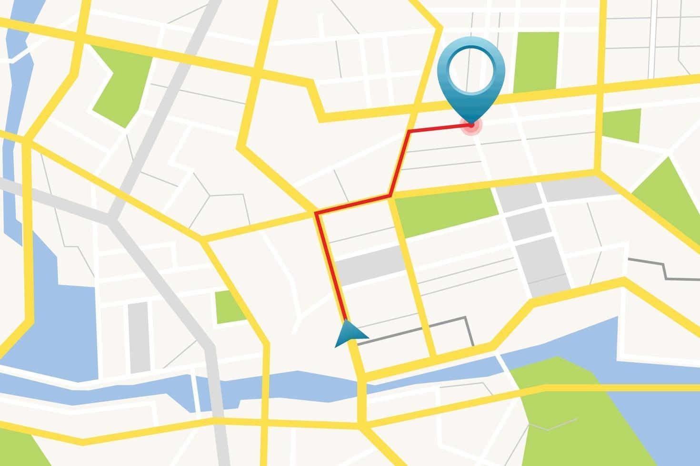

Gabinete das Diretorias
O Gabinete das Diretorias do IFRN presta apoio administrativo e institucional às diretorias da instituição. Suas atividades incluem a organização de agendas, acompanhamento de processos, comunicação interna e externa, além de auxiliar na execução de ações estratégicas. O setor atua para garantir o funcionamento eficiente das atividades administrativas, contribuindo para a tomada de decisões e o alinhamento das diretrizes institucionais.
